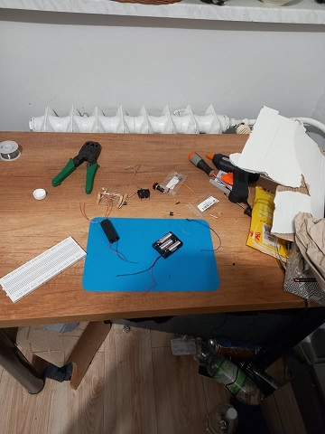
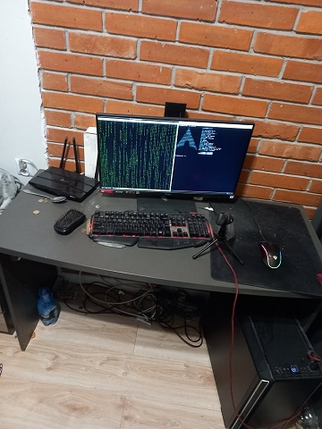

...czyli trochę informacji o mnie.
Witam, nazywam się Damian Adamczyk, mam 18 lat i chodzę do 3 klasy Zespołu Szkół Techniczno-Informatycznych w Gliwicach i uczę się na kierunku zawodowym Technik Informatyk. Mieszkam w zachodniej części Gliwic na osiedlu Sikornik.
Na codzień interesuję się elektroniką, siecią komputerową, programowaniem, polityką i strzelectwem sportowym. W wolnych chwilach testuję i sprawdzam zachowanie komponentów i schematów elektronicznych przy pomocy mikrokomputera (lub mikroprocesora) Raspberry Pi Pico. Za jedno z większych osiągnięć jakie udało mi się uzyskać w związku z owym mikroprocesorem jest napisanie własnego prostego sterownika w języku C do wyświetlaczy LCD 1602 wraz z w miarę wygodnym interfejsem programistycznym.
Interesuję się też inżynierią wsteczną, tyczy to się nie tylko oprogramowania, ale też sprzętu i zachowań danych procesorów/mikroprocesorów. By móc lepiej zrozumieć działanie sprzętu komputerowego poznałem język x86 Assembly, który mimo swojego wieku dalej pozostaje mocnym narzędziem podczas hakowania gier i programów.
Gdy mam więcej czasu wyjeżdżam na strzelnicę podszlifować swoje umiejętności strzeleckie. Jeśli zaistnieje taka możliwość, będę zamierzał dołączyć do jakiegoś klubu strzeleckiego, który mi pomoże w ewentualnym przyszłym uzyskaniu pozwolenia na broń do celów sportowych.
ZDJĘCIA:
- 
- 